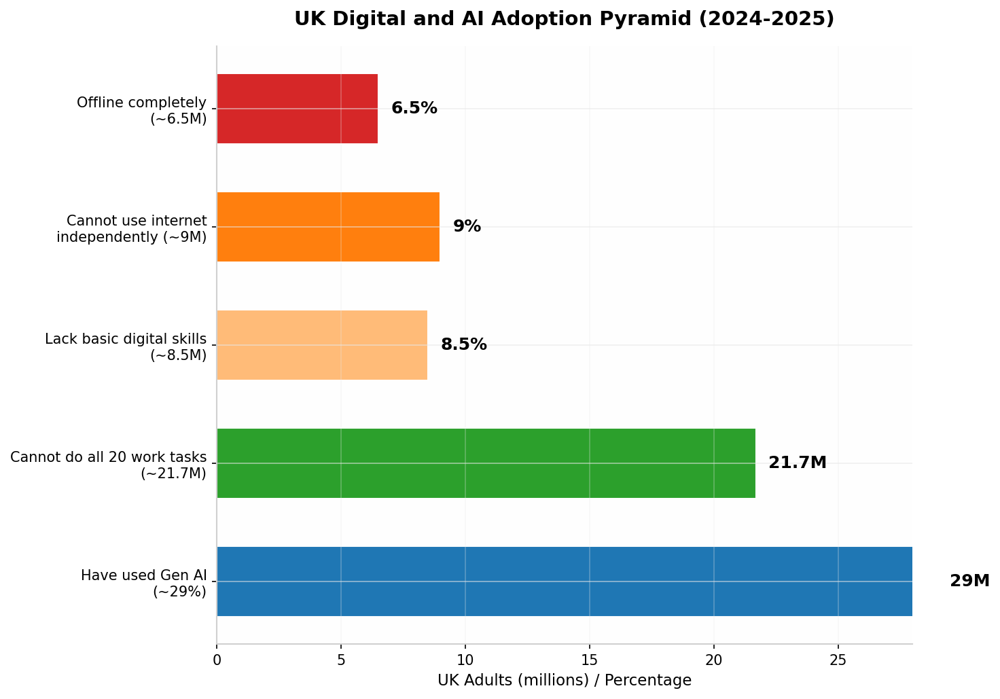
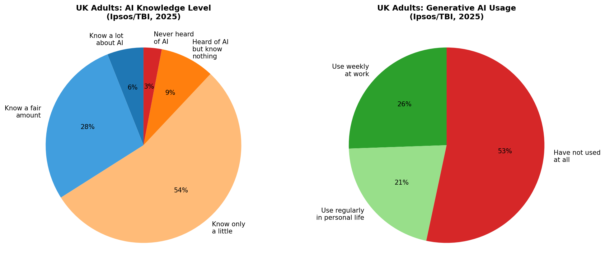
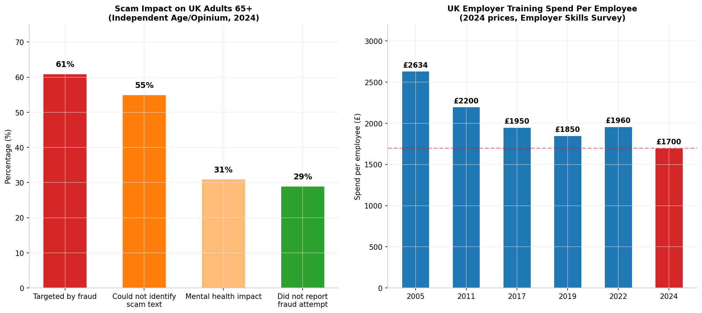

Ciru Inference Lab
llm.ciru.ai / research
Ciru Inference Lab
llm.ciru.ai / research
Kimi Report: UK AI Inclusion Feasibility
A readable decision report from kimi.zip on whether to build a business around AI onboarding for low-digital-confidence adults in the UK.
Executive Verdict
Core Insight
The opportunity is not teaching people to want AI. The report's central finding is that low-digital-confidence adults need practical help with forms, scams, banking, health apps, job applications, and phone confidence. AI should be the hidden engine that makes support faster and better, not the first-contact pitch.
Best Wedge
Employer-sponsored Digital Confidence for Frontline Staff is the strongest first move. Employers have budgets, non-office workers face real digitization pressure, delivery can happen in groups, and the value proposition is operational rather than abstract.
Market Shape
The Kimi report frames the market as a layered digital-exclusion problem. Millions are offline or unable to use the internet independently, while AI adoption sits above basic digital confidence. That makes institutional access and trusted human delivery more important than app distribution.
Market Size Scenarios

| Metric | Low | Base | High | Unit |
|---|---|---|---|---|
| Low digital confidence adults | 8.5 | 15.0 | 21.7 | million |
| Never used generative AI | 35.0 | 30.0 | 25.0 | million |
| No/fairly low AI knowledge | 30.0 | 25.0 | 20.0 | million |
| Institutionally reachable | 2.0 | 5.0 | 10.0 | million |
| Sponsored users | 0.05 | 0.2 | 0.5 | million |

Awareness Gap
Only 34% of UK adults are reported as knowing at least a fair amount about AI; 54% know only a little, and 12% have never heard of it or know nothing about it. The report also highlights that nearly half of UK adults have not used generative AI tools in the past 12 months.
The trust gap is material: 56% of non-users see AI as a risk to society, compared with 26% of regular users. That is why the recommended offer needs trusted intermediaries and practical language.
Target Segments
The Kimi report scores 14 segments. Non-office workers are the standout because they combine scale, a clear buyer, workplace pressure, and manageable support burden. Older adults are emotionally compelling but direct revenue is harder because willingness to pay is low and support needs are high.
Segment Scores
| Segment | Size | Core pain | Buyer | Best channel | Likely product | Score | Caution |
|---|---|---|---|---|---|---|---|
| Non-office workers | 8M+ | Digital payslips, scheduling, compliance apps | Employer | Employer HR, union rep, team leader | Digital Confidence at Work workshop | 9/10 | Strongest wedge: clear buyer, budget, scale |
| Housing association residents | 2M+ | Rent portals, repairs, energy bills, benefits | Housing association | Housing association offices, community rooms | Tenant digital support program | 7/10 | Volume play; low per-unit revenue |
| Small business owners | 1.5M+ | Marketing, admin, invoicing, customer service | Self / chamber | Small business networks, chambers, Facebook | AI for Your Business clinic | 7/10 | Price-sensitive; many free alternatives |
| Low-income working age | 4M+ | Benefits, job applications, forms, banking | Council / DWP / charity | Job Centre, library, housing association | Job-seeker digital + assistant training | 6/10 | Requires public funding; slow sales cycle |
| Carers | 5M+ | Form filling, health apps, time pressure, isolation | Self / employer | GP surgery, carer support groups, council | Digital Help for Carers | 6/10 | Scattered; hard to reach at scale |
| Women returning to work | 1M+ | Confidence, skills gap, childcare, flexible work | Self / employer / DWP | Job centres, women's networks, Facebook | Back to Work Digital Confidence | 6/10 | Moderate WTP; free alternatives |
| NHS chronic-condition patients | 15M+ | Appointments, prescriptions, health info, forms | NHS / family | GP surgery, pharmacy, hospital | Managing Your Health Online | 6/10 | NHS procurement slow; needs credibility |
| Older adults 65-74 | 2.3M | Banking, shopping, scams, family contact | Family / self | Library, community centre, Facebook | Stay Safe Online + phone help | 5/10 | Low WTP; free alternatives exist |
| Job seekers | 1.3M+ | CVs, applications, interview prep | DWP / employment provider | Job Centre Plus, Work Programme | AI-powered job search + CV help | 5/10 | Commoditized; free provision dominant |
| People with disabilities | 14M | Accessibility, assistive tech, service access | Self / family / PA | Disability orgs, social care, OTs | Accessible device setup + AI tools | 5/10 | High support burden; safeguarding liability |
| ESOL / immigrant communities | 1.5M+ | Language barriers, form filling, job search, banking | Council / community org | Community centres, mosques, ESOL classes | Multilingual phone help + form assistance | 5/10 | Requires specialist partners |
| Adults in financial hardship | 3M+ | Budgeting, banking, scams, benefits | Charity / council | Citizens Advice, food banks, credit unions | Scam safety + money management help | 5/10 | No payment capacity; grant-dependent |
| Older adults 75+ offline | 1.7M | Isolation, service access, health apps | Family member | Library drop-in, GP surgery, church | Phone confidence clinic + tablet loan | 4/10 | Margins too thin; charity funding only |
| Rural communities | 2M+ | Broadband, service access, isolation, transport | Council / rural charity | Village halls, mobile libraries, parish | Mobile digital clinic | 4/10 | Travel costs erode margins |
Demand Reality
What They Actually Want
- Help filling in forms and understanding official letters.
- Scam safety, fraud confidence, and help deciding whether a message is legitimate.
- Phone confidence, banking, health apps, GP appointments, prescriptions, job applications, and family contact.
- A patient person in a familiar place, not a self-serve online course.

| Instead of | Use | Why |
|---|---|---|
| AI training | Get more from your phone | Focuses on a device they already own. |
| Learn about AI | Save time on forms and admin | Direct benefit, no abstraction. |
| Digital skills course | Stay safe from scams and fraud | Addresses the strongest fear. |
| ChatGPT workshop | Get answers without searching for hours | Practical outcome, no product jargon. |
| AI for work | Keep up with changes at your workplace | Frames it as workplace support. |
| Technology help | Someone patient to show you, step by step | Emphasizes human support. |
Offer Ranking
The highest-ranked offer is a workplace workshop. Family-sponsored clinics and scam-safety workshops are useful secondary validation channels, especially through libraries, but the report treats direct older-adult monetization as thin-margin.
Top Offer Scores
| Concept | Target user | Buyer / sponsor | Price hypothesis | Margin potential | 30-day MVP? | Score |
|---|---|---|---|---|---|---|
| Digital Confidence at Work | Non-office workers | Employer HR/Ops | £350-500/session | 60-70% | Yes | 9/10 |
| Phone + Life Admin Clinic | Older adults 65+ | Adult children | £95-150/session | 50-60% | Yes | 8/10 |
| Scam-Safe Digital | Adults 50+ worried about fraud | Council / charity / family | £45-75/head or £200-350/session | 55-65% | Yes | 7/10 |
| Tenant Digital Support | Housing residents | Housing association | £8-15/resident | 50-60% | Yes | 7/10 |
| Train-the-Trainer | Digital champions, library staff | Council / charity | £1,500-3,000/cohort | 65-75% | Yes | 7/10 |
| Employer AI readiness | Employers | L&D / HR | £1,500-3,000 | 60-70% | Yes | 7/10 |
| Job Search Help | Long-term unemployed | DWP / provider | £80-120/participant | 40-55% | Yes | 6/10 |
| Small Business AI Clinic | Non-tech small businesses | Self / chamber | £150-250/workshop | 55-65% | Yes | 6/10 |
| Printed workbook + helpline | Complete beginners | Family / charity | £25-40 + calls | 50-60% | Yes | 6/10 |
| Back to Work course | Women returners | Self / DWP / orgs | £75-150/course | 45-55% | Yes | 6/10 |
| Digital Health Navigator | Chronic-condition patients | NHS / charity | £60-100/patient | 45-55% | No | 5/10 |
| Community ambassador | Hard-to-reach communities | Council / funder | £25-40K/year | 20-35% | Yes | 5/10 |
| QR learning journeys | Low-literacy mobile users | Charity / council | £5-15/user | 50-60% | Yes | 5/10 |
| Done-with-you AI setup | Older tech-anxious adults | Family | £150-250/session | 40-50% | Yes | 5/10 |
| WhatsApp support line | Low-confidence adults | Family / employers | £15-25/month | 30-45% | Partial | 4/10 |
| ESOL + Digital | Immigrants, low English | Council / charity | £80-120/person | 40-50% | No | 4/10 |
| Rural mobile clinic | Rural isolated residents | Council / rural charity | £500-800/day | 35-45% | No | 4/10 |
| Family tech support remote | Families with older relatives | Adult children | £25-40/month | 35-50% | Partial | 4/10 |
Unit Economics
Unit Economics
Year 1 Monthly Model
| Concept | Revenue | Delivery cost | Gross profit | Gross margin |
|---|---|---|---|---|
| Employer workshop | £450 | £190 | £260 | 58% |
| Family clinic | £120 | £90 | £30 | 25% |
| Scam-safe private workshop | £480 | £175 | £305 | 64% |
| Scam-safe sponsored workshop | £300 | £175 | £125 | 42% |
| Train-the-trainer cohort | £2,200 | £500 | £1,700 | 77% |
| Housing association contract | £12,000 | £7,800 | £4,200 | 35% |
The path becomes materially healthier at £8,000-10,000/month revenue, which the Kimi report suggests is plausible in Year 2 with several regular employer clients, two council contracts, and some family clinic volume.
Distribution Strategy
The distribution conclusion is blunt: trust beats reach. The likely channels are employers, libraries, councils, family referrals, and housing associations. Cold app-store style distribution is a mismatch for low-digital-confidence users.
| Channel | Trust | Conversion likelihood | Scale potential | Priority |
|---|---|---|---|---|
| Employers | Medium-High | Medium | High | 1 |
| Libraries | Very High | High | Medium-High | 2 |
| Councils | High | Medium | High | 3 |
| Family referrals | Very High | High | Medium | 4 |
| Job Centres | Medium | Medium | Medium | 5 |
| Housing associations | High | Medium | Medium | 6 |
| Community centres / churches | Very High | Medium | Medium | 7 |
| Facebook groups | Medium | Medium | Medium | 8 |
Risks and Constraints
| Risk | Severity | Likelihood | Mitigation |
|---|---|---|---|
| Privacy / data handling | High | High | GDPR compliance, explicit consent, clear privacy policy, never ask for passwords. |
| Scams / fraud exposure | Very High | High | Make scam safety core, set strict staff boundaries, escalate suspicious activity. |
| AI hallucination / misinformation | High | Medium | Human verification, trusted sources, teach users to verify outputs. |
| Safeguarding vulnerable users | Very High | Medium | DBS checks, safeguarding training, escalation procedures, charity partners. |
| Exploitation perception | High | Low-Medium | Transparent pricing, no pressure selling, visible social mission and user benefit. |
| Consent / capacity issues | High | Medium | Capacity protocols and family involvement where appropriate. |
30-Day Validation Plan
Week-by-Week Test
- Week 1: finalize 3 offers, build workshop outlines, create landing pages and employer sell sheet.
- Week 2: contact 10 employers, approach 5 libraries, post in local groups, run discovery conversations.
- Week 3: deliver one employer pilot, one library phone clinic, and interview users and family members.
- Week 4: attempt first paid employer session, first paid family session, flyer test, and one council pitch.
Budget
Under £500 covers printing, small Facebook tests, venue hire, travel, refreshments, and basic materials. Under £2,000 adds facilitator coverage, landing-page tooling, scheduling/CRM, promotional video, and more paid acquisition.
| Metric | Proceed with caution | Green light |
|---|---|---|
| Employer conversations booked | 3 | 5+ |
| Employer pilot delivered | 1 | 1+ with positive feedback |
| Library partnerships secured | 1 expression of interest | 1 committed pilot |
| Family sessions booked | 2 | 4+ |
| User interviews completed | 5 | 8+ |
| Workshop NPS | 30+ | 50+ |
| Would recommend | 60% yes | 80% yes |
| Revenue generated in week 4 | £100+ | £300+ |
| Council conversation secured | 0 | 1 |
Final Recommendation
Ranked Playbook
- Primary wedge: Digital Confidence at Work for non-office sectors.
- Secondary wedge 1: Phone + Life Admin Clinics through libraries and community centres.
- Secondary wedge 2: council or charity contracted digital inclusion programs and train-the-trainer.
- Best first paid offer: £350 employer workshop or £120 family-sponsored clinic.
- Best lead magnet: "5 Scams Targeting People Over 65 - And How to Spot Them".
Decision Boundaries
- Continue if employer interest and library engagement appear in weeks 3-4.
- Pivot to B2B digital readiness consultancy if users engage but institutions only want employer-level advisory.
- Park the idea if there is zero employer interest after 20 qualified outreach attempts and no library partnership traction.
Source Artifacts
This HTML was generated from /srv/desktop-data/cirudata/kimi.zip. The extracted source Markdown is preserved as assets/kimi/uk_ai_inclusion_feasibility_report.md, and the three original Kimi charts are preserved in assets/kimi/.